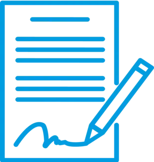

Débouchage de canalisations : À Beauchamp, nous intervenons rapidement pour éliminer toute obstruction dans vos canalisations, qu'il s'agisse de toilettes, d’éviers ou de conduits principaux. Nos équipements haute pression et notre équipe qualifiée permettent une remise en service immédiate, sans détérioration de vos installations.
Assainissement IDF
SERVICES


Inspection par caméra : Grâce à notre technologie d’inspection vidéo, nous explorons l’intérieur de vos canalisations à Beauchamp pour repérer bouchons, fissures ou anomalies. Cette méthode sans casse nous permet d’intervenir avec précision et de proposer un plan d’action ciblé et efficace.
Bacs à graisse : À Beauchamp, nous assurons la vidange, le nettoyage et la maintenance de vos bacs à graisse. Essentielle pour prévenir les obstructions et les mauvaises odeurs, cette opération est réalisée dans les règles de l’art, que vous soyez un particulier ou un professionnel de la restauration.


Cuves à fioul : Nous proposons à Beauchamp un service complet de traitement des cuves à fioul : vidange, dégazage, neutralisation et dépose. Notre intervention est conforme aux normes environnementales en vigueur pour assurer votre sécurité et celle de votre logement en cas de changement de chauffage ou de mise hors service.


UNE ÉQUIPE EXPÉRIMENTÉE ET UN ÉQUIPEMENT HAUT DE GAMME À BEAUCHAMP
Que ce soit pour des cuves à fioul, des bacs à graisse, des inspections caméra ou du débouchage de réseaux, notre entreprise intervient à Beauchamp avec une flotte de véhicules parfaitement adaptés. Nous utilisons des camions hydrocureurs, des poids lourds pour le curage de grande capacité et des véhicules compacts pour accéder aux zones les plus étroites. Notre matériel moderne, associé à une équipe expérimentée, nous permet d’apporter des solutions rapides, ciblées et efficaces pour chaque situation, qu’il s’agisse d’un dépannage ou d’un entretien préventif.
TARIFS TRANSPARENTS À BEAUCHAMP
UN EXCELLENT RAPPORT QUALITÉ/PRIX
Nous proposons à Beauchamp des services spécialisés en vidange de cuves à fioul, nettoyage de bacs à graisse, inspection caméra et débouchage à des tarifs accessibles et clairs. Notre engagement : vous garantir un service irréprochable, rapide et au juste prix. Obtenez votre devis gratuit et faites appel à une équipe professionnelle à votre écoute.
DEVIS GRATUITPOURQUOI CHOISIR ASSAINISSEMENT 95 À BEAUCHAMP ?
À Beauchamp, Assainissement 95 s'impose comme une référence en matière de débouchage, inspection caméra, vidange de cuves ou nettoyage de bac à graisse. Notre équipe, locale et expérimentée, vous garantit un service réactif, soigné et conforme aux normes en vigueur. Nous mettons tout en œuvre pour vous offrir une prestation durable, du diagnostic à la finalisation des travaux.
DES CONTRATS ADAPTÉS POUR L’ASSAINISSEMENT À BEAUCHAMP
INTERVENTIONS SUR MESURE : PONCTUELLES OU RÉGULIÈRES
Pour une tranquillité assurée à Beauchamp, optez pour nos contrats d’assainissement souples et personnalisés. Qu’il s’agisse d’un besoin ponctuel ou d’un entretien annuel, nous définissons ensemble un programme d’intervention clair, avec une transparence totale sur les étapes, les tarifs et les délais. Notre priorité : votre sérénité et la conformité de vos installations.
UNE OFFRE GLOBALE POUR TOUS VOS BESOINS EN ASSAINISSEMENT À BEAUCHAMP
Nous intervenons rapidement à Beauchamp pour tout débouchage de canalisations : WC, douche, évier ou colonne principale. Nos équipements haute pression assurent un nettoyage efficace sans dégradation.
Pour un diagnostic fiable sans casse, nous utilisons une caméra d’inspection. Elle permet d’identifier précisément les bouchons, cassures ou anomalies afin d’intervenir de manière ciblée.
Nos équipes assurent également la vidange, le nettoyage et l’entretien de vos bacs à graisse. Indispensables pour éviter les engorgements, ces opérations sont réalisées avec méthode, chez les particuliers comme les professionnels.
Enfin, nous prenons en charge la neutralisation, la vidange et le démontage de vos cuves à fioul à Beauchamp, dans le respect strict des normes en vigueur. Sécurité, propreté et écologie sont au cœur de notre démarche.
NOS VALEURS
QUALITÉ
UNE EXIGENCE PERMANENTE
À Beauchamp, nous nous engageons à fournir un travail de qualité. La précision de nos interventions et la satisfaction de nos clients sont au cœur de nos priorités.
PASSION
UN MÉTIER EXERCÉ AVEC PLAISIR
Notre passion pour l’assainissement se traduit par des interventions soignées et une relation client personnalisée. Chaque chantier est une nouvelle mission que nous relevons avec enthousiasme.
ENGAGEMENT
LE RESPECT DE NOS CLIENTS
Nous intervenons avec ponctualité, discrétion et professionnalisme. Nos engagements sont tenus, et chaque client bénéficie d’un suivi sérieux, du premier contact à la fin des travaux.
CONFIANCE
UNE RELATION DURABLE
La confiance est la base de nos relations à Beauchamp. En nous confiant votre assainissement, vous avez l’assurance d’un accompagnement honnête, transparent et fiable.